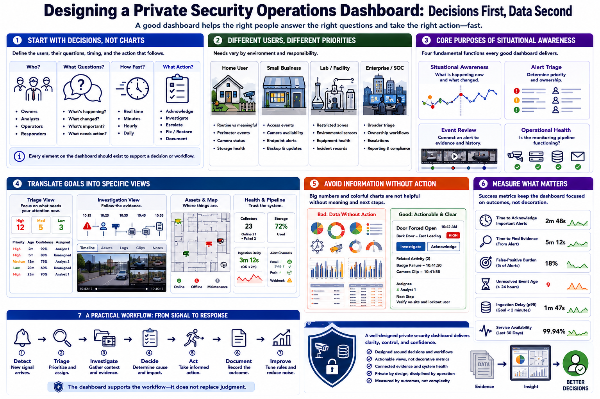

Defining Dashboard Goals
Connecting to LMS... Progress: in progress

Narration
Dashboard design should begin with the decisions users need to make. Before choosing charts or software, identify who will use the system, what questions they must answer, how quickly they need answers, and what action should follow.
A home user may need to distinguish routine motion from a meaningful perimeter event. A small business may monitor access, camera availability, endpoint alerts, and backup status. A laboratory or facility may care about restricted zones, environmental sensors, equipment health, and incident records. An enterprise team may need broader triage and ownership workflows.
Situational awareness answers what is happening now and what changed recently. Alert triage helps determine priority and ownership. Event review connects an alert to supporting evidence and prior activity. Operational health shows whether the monitoring pipeline itself is functioning.
Translate those goals into specific views. A triage view may emphasize new high-priority events, confidence, age, and assignment. An investigation view may show a timeline, related assets, logs, and clips. A health view may show failed collectors, storage pressure, delayed ingestion, and notification errors.
Avoid a dashboard that displays data without supporting action. Large counters and colorful charts are not useful when a reviewer cannot tell what requires attention, why it matters, or where to investigate next. Every prominent element should support a defined decision or workflow.
Set success measures early. Useful measures include time to acknowledge important alerts, time to find supporting evidence, false-positive burden, unresolved event age, ingestion delay, and service availability. These measures keep the dashboard focused on operational outcomes rather than visual complexity.